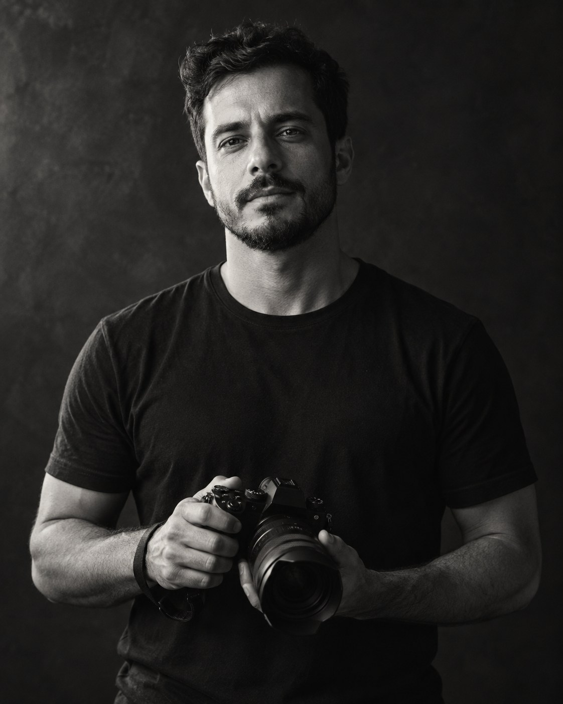
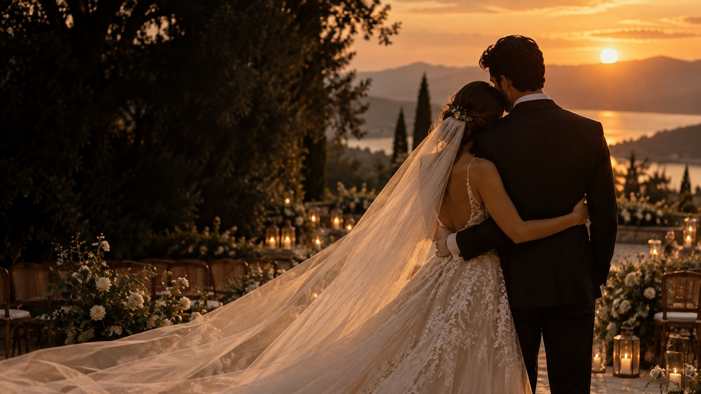
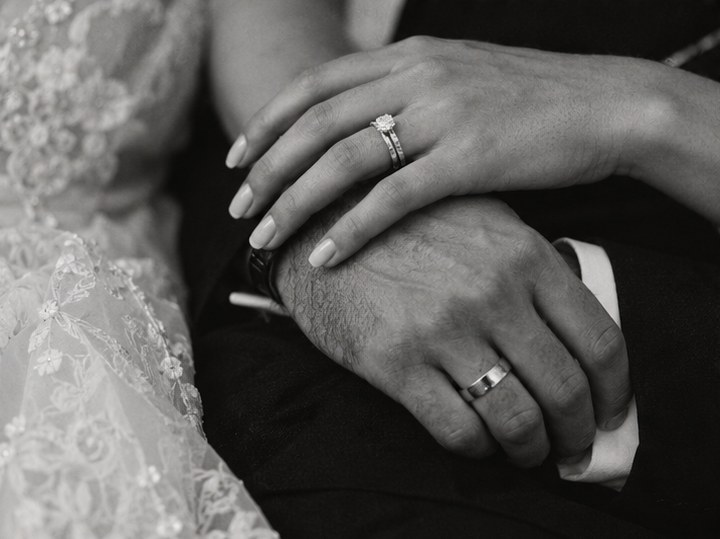

Instantes
Para guardar o que mais importa.
- Até 4 horas de cobertura
- Galeria digital privada
- Fotos editadas em alta resolução
R$ 1.490 a partir de*↗

Pessoas, encontros e a emoção que existe entre um instante e outro.
Conheça meu trabalhoGosto de chegar perto sem interromper. De registrar como você viveu o dia, com quem esteve ali e o que fez tudo valer a pena.
Mais sobre meu olhar ↗Explore as histórias pelo que elas têm de mais bonito: as pessoas que as viveram.

Galerias demonstrativas. Fotos reais de cada trabalho podem substituir estas imagens.
Antes de fotografar, eu escuto. Entendo quem você é, o que espera desse dia e quais pessoas não podem faltar nas lembranças.
Durante a celebração, procuro os gestos espontâneos e deixo espaço para a história acontecer naturalmente.
Da luz de uma cerimônia à energia da festa, preparo para registrar cada cena como ela merece.
Escolha um ponto de partida. A proposta final é pensada para o seu evento.
Para guardar o que mais importa.
Mais tempo para contar sua história.
Cada capítulo, do início ao fim.
* Valores demonstrativos. Experiência, números e equipamentos devem ser confirmados com o fotógrafo.
Depois de alinharmos a proposta, a reserva é formalizada por contrato e pagamento do sinal.
Sim. Deslocamento e eventuais custos de viagem entram na proposta personalizada.
Sim. Horas de cobertura e entregáveis podem ser ajustados ao seu evento.
O prazo é definido na proposta conforme o tipo e o tamanho da cobertura.
Conte um pouco sobre o seu evento e conversamos sobre como registrá-lo.
